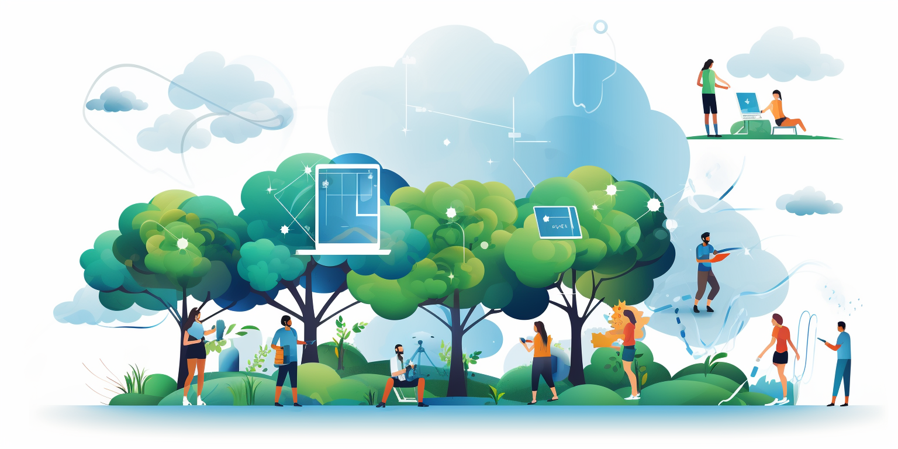

Twin User Journeys
A game of tennis
Imagine wanting to play a game of tennis but dreading the coordination required to make it happen. With your digital twin, that entire process becomes a seamless operation.
All you need to say is, “Hey twin, I would like to play tennis. Can you arrange please?" Your digital twin leaps into action, already aware of your location and where your friends are. It can communicate on your behalf with your friends, using the most appropriate communication method for each one. No need to juggle WhatsApp, Telegram, or SMS; your twin handles it all.
Next, your digital twin finds a suitable time slot that works for everyone and contacts a tennis center to check for availability. If needed, it might even handle the payment for you, matching it with the agreed dates. This is all happening in the background, saving you the time and hassle.
Your friends will then be informed through various channels—chat, email, SMS, or through their own digital twins if they have them. They can confirm their participation with a simple response, streamlining the process even further.
What could normally take you 20 or 30 minutes of back-and-forth coordination now becomes an effortless task, taking only a couple of seconds. Your digital twin turns the tedious task of coordination into an efficient and enjoyable experience. It's more than convenience; it's like having a personal assistant that understands you and your needs, working diligently to bring joy and ease into your life.
Paying Money
A seamless, frictionless payment process is one of the straightforward yet impactful applications of using a digital twin. Imagine a situation where you've forgotten to pay your friend Rob and want to settle the debt. In today's world, that might involve several steps, such as finding out Rob's bank details, determining the currency, dealing with conversion rates if Rob is in another country, and navigating various banking platforms.
With your twin, this process becomes remarkably simple. You merely tell your twin to pay Rob the desired amount, and it takes care of the rest. It knows what currencies Rob can accept, whether the payment should be digital or fiat, and can even manage multiple blockchains if necessary. It aligns with what you can send with what Rob can receive, converting currencies as needed. Before executing the transaction, your twin provides a summary of the process, including any overheads, and asks for your confirmation. Once approved, the payment is made, and Rob's twin will notify yours when the money has arrived.
This seemingly simple function illustrates the potential power of digital twins in making our daily lives more efficient. By removing the complexities and potential errors involved in transactions, it streamlines the process, allowing you to focus on what truly matters. Whether paying a friend, managing a business transaction, or handling international funds, the twin acts as an intermediary that not only facilitates the transaction but ensures its accuracy and security. It's another example of how technology can simplify our lives, putting us in control while taking care of the minutiae. It's not just about making payment easier; it's about redefining how we interact with our finances in a digital world.
Feeling not so well
Feeling ill and far from home can be a distressing experience, but your digital twin is there to help you navigate it. Imagine you've just traveled from Paris to Zanzibar and you're not feeling well. Nausea, pain, cramps, and diarrhea have left you feeling weak and worried.
You can reach out to your twin with a simple message: "Hey twin, I don't feel well. I'm nauseous, I just traveled from Paris to Zanzibar, and I've been here for two days. I haven't been able to eat much, but the last thing I ate was some fish on the plane. I have cramps, and I have some diarrhea, and I really feel very, very weak. I'm a little bit worried now. Should I go to a doctor?"
Your twin, powered by a global AI network, immediately begins to gather information, asking you for specific symptoms to better understand your condition. It can then offer you choices tailored to your needs: Would you like to see a doctor online, or visit a nearby 24-hour hospital?
Should you choose to speak with a doctor online, your twin can handle all the details, finding a slot with a doctor and setting up a video conference for you in just one hour. If you prefer to see a doctor in person, your twin can find a nearby hospital and make a reservation for you. It guides you through the process, providing comfort and convenience in a challenging moment.
This scenario might sound like science fiction, but with the capabilities of the digital twin, it's a possibility that may not be too far off in the future. It's a powerful example of how the integration of AI, personalized support, and global connectivity can come together to provide unprecedented assistance, even in the most personal and intimate aspects of our lives.
I am hungry
Imagine you're at home on a dark evening, unwilling to venture outside but feeling the pangs of hunger. You open the fridge only to find it empty. No need to worry, though — your digital twin is there to help.
With a simple message, you can reach out: "Twin, I'm hungry. Can you find me a pizza? And I would like to have a pizza with salami. But I'm really hungry, so please hurry."
Your twin springs into action, scanning the local area for open pizzerias, prioritizing those with 3Bots to ensure a smooth process. Within moments, it identifies an available option and begins coordinating the order.
Not only does your twin handle the selection and payment, but it even arranges for a taxi driver, who also has a 3Bot, to pick up the pizza and deliver it to your door.
Within just one minute, your twin returns to you with a complete summary: "I found someone who can pick up the pizza on your behalf, and the pizza would come from this place, it would cost that much, and this is the description of the pizza. It would cost you 12 EUR, and you would probably have it within 30 minutes." All that's left for you to do is agree.
In a process that might have taken significant time and effort, your twin has handled everything. Within 30 minutes, your beloved pizza is in your hands, all thanks to the seamless, intuitive interaction with your digital companion.
This scenario illustrates the convenience and responsiveness that the digital twin brings to even the simplest daily tasks. It showcases how AI technology can be integrated into our lives, acting on our behalf to fulfill our needs with efficiency and precision.
Colaboration between Developers.

You realize you need developers for your software development project. You already have some in mind, but you need to formalize the collaboration.
-
Initiating Collaboration: You reach out to your digital twin: "Hey twin, can you create a circle in which we are going to coordinate our development work. In that circle, please find the developers I found yesterday with the name Caroline, Tim, and Juma."
-
Negotiating Terms: You set the parameters for collaboration: "Can you connect them to this circle and see if we can find an agreement to collaborate? I am willing to pay up to 3000 USD a month. If they agree, we want to have a digital agreement between our respective companies and set up digital wallets."
-
Simplifying the Hiring Process: Unlike traditional hiring, where payroll, contracts, and legal obligations take up a significant amount of time and resources, your twin can facilitate a short-term agreement effortlessly.
-
Setting Up Collaboration Circle: Your twin sets up the collaboration circle, and each collaborator's twin (or they are invited to get a twin if they don't have one) becomes part of it. This allows everyone to collaborate both financially and task-wise within the circle.
-
Defining Milestones and Tasks: As the coordinator, you define the project's milestones, tasks, and priorities. You can hold video conferences, collaborate seamlessly, and everyone's digital twin keeps track of what needs to be done.
-
Automatic Payments and Flexibility: Payments are handled automatically, with full transparency and no friction. There's flexibility in the collaboration, and if for whatever reason the partnership needs to end, it can be done without liability.
-
Transparency and Efficiency: The use of digital twins creates a loose but strongly connected link between all parties involved. It ensures full transparency and eliminates the traditional complexities of collaboration, hiring, and project management.
By leveraging the power of digital twins, the entire process of finding, negotiating, and collaborating with developers becomes streamlined and efficient.
It breaks down the barriers of traditional employment and introduces a new era of flexible and transparent professional collaboration. This scenario showcases the potential of the digital twin technology to revolutionize how businesses operate and how professionals work together.
A more complicated usecase: our football clubhouse
Imagine you're a co-founder of a football club, and you decide it's time to build a clubhouse. Traditionally, this would be a complicated and lengthy process, involving bank accounts, paperwork, and perhaps even the creation of a not-for-profit organization. The governance and fundraising would take significant time and effort.
With the digital twin technology, however, the process becomes seamless and efficient. Here's how it unfolds:
-
Initiating the Fundraising Circle: You simply speak to your twin: "Hey twin, I would like to create a circle. Can you please add my friends Sascha, Sam, Veronique, and Jeff to this group please? Can you ask them if they are willing to participate in a circle where we will manage assets for the creation of our new clubhouse for the football club?"
-
Setting the Rules: You set clear governance guidelines with your twin: "If they agree, can you please make it so that always 70% of us need to vote positively on every proposal. I want the money to be held in physical gold."
-
Communicating the Project: Your twin takes charge of informing members and initiating the crowdfunding: "And can you then please, if we find consensus, let our members know that we are going to develop a new clubhouse and that if they want to, they can participate in our crowdfunding and co-own the new clubhouse."
-
Creating a Human Chain: Behind the scenes, your twin creates what's called a "human chain," akin to a blockchain but consisting of humans. This transparent mechanism allows the group to manage money, make decisions, communicate, and oversee the entire project.
-
Ongoing Management: The twins handle everything from task prioritization to decision-making, communicating amongst themselves to keep everything on track.
What might have been a cumbersome and time-consuming process is now streamlined and efficient. It may sound like science fiction, but it's a tangible possibility with the power of digital twins. This approach not only saves time but opens up new opportunities for collaboration, transparency, and community-driven initiatives. It's a vivid illustration of how technology can transform the way we organize and achieve our collective goals.
Far future?
What we've described through these various use cases might appear to be a leap into a distant future, but the reality is much closer than it seems.
Leveraging the power of a digital twin doesn't mean surrendering control; in fact, it puts you more in control of your digital life.
Whether it's organizing a sporting event, seeking medical advice, ordering a meal, fundraising for a community project, or collaborating on professional endeavors, the twin can act as your personal superhero.
It can automate, streamline, and enhance various aspects of your daily life, often performing tasks in a fraction of the time it would take you manually. While the early stages of this technology might still require some human input and might not be as seamless as envisioned here, the foundation is already being laid. The journey towards this innovative future is not just a possibility but a very tangible reality.
It's a future where your digital twin stands by your side, ready to assist, and making your life simpler, more efficient, and more connected. It's not just about technological advancement; it's about enhancing human potential and making technology work for us in ways we've never imagined before.
The future of the digital twin is here, and it's just waiting for us to embrace it.